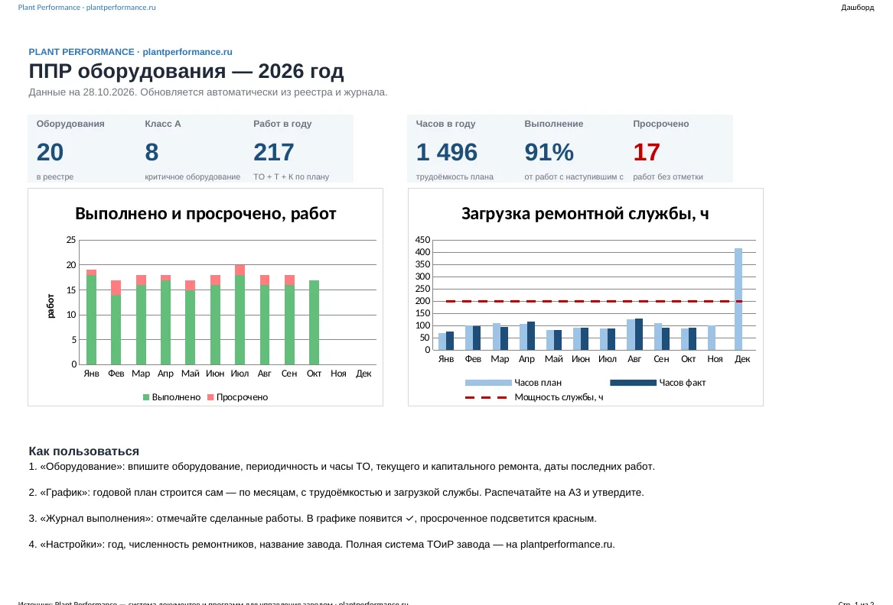

Plant Performance / Образцы / График ППР оборудования
Бесплатный образец
График ППР оборудованияобразец в Excel: годовой план-график планово-предупредительного ремонта
Годовой план-график планово-предупредительного ремонта, который строится сам. Впишите оборудование и периодичность — Excel расставит ТО, текущие и капитальные ремонты по месяцам, посчитает часы и покажет месяцы, где не хватает ремонтников.
Excel без макросов + PDF для печати на А3. Образец заполнен на 20 единиц оборудования. Без регистрации. Открывается в Excel и LibreOffice.

Что внутри
- Годовой график ППР — 12 месяцев, коды ТО / Т / К, цвета, печать на А3 с полем «Утверждаю»
- Реестр оборудования — периодичность и трудоёмкость каждого вида работ; класс критичности A / B / C считается по четырём признакам
- Журнал выполнения — отметили работу, и в графике появилась галочка; не отметили в срок — ячейка красная
- Дашборд — процент выполнения плана ППР, просрочки, загрузка ремонтной службы по месяцам
Как составить график ППР оборудования за 30 минут
- Выпишите оборудование: инвентарный номер, название, участок.
- Для каждой единицы укажите, раз в сколько месяцев и сколько часов занимает техобслуживание, текущий и капитальный ремонт. Берите из паспорта оборудования, а где паспорта нет — из опыта механика.
- Впишите даты последних работ — от них график отсчитает следующие.
- Укажите год и численность ремонтников — увидите месяцы, где план невыполним.
- Распечатайте график на А3, утвердите у главного инженера и повесьте в ремонтной службе.
График ППР оборудования: частые вопросы
Чем график ППР отличается от графика технического обслуживания оборудования?
График ТО — только техническое обслуживание. График ППР включает и ТО, и плановые текущие и капитальные ремонты. В шаблоне есть все три вида.
Что делать, если в одном месяце совпали ТО и ремонт?
В графике показывается старший вид работ: капитальный ремонт включает текущий, текущий — техобслуживание.
Кто утверждает график ППР?
Обычно главный инженер или технический директор; составляет главный механик или энергетик. Для электрооборудования — ответственный за электрохозяйство.
Подойдёт для электрооборудования, котельной, кранов?
Да. Периодичность для каждой единицы задаётся отдельно; для оборудования, подконтрольного Ростехнадзору, сверяйте её с обязательными требованиями.
Нужны ли макросы?
Нет. Только формулы, работает в Excel и LibreOffice.
График ППР — часть системы ТОиР завода
В полной системе документов: регламент ТОиР, реестр оборудования со стратегией обслуживания, поверка средств измерений, журнал отказов, чек-листы ТО ремонтной службы и ещё более 100 документов для управления заводом.
Другие бесплатные образцы
Напишите нам
Расскажите в двух строках, что за завод и что хотите посмотреть или автоматизировать. Ответим, покажем программу в работе и пришлём документы, которых нет на сайте.